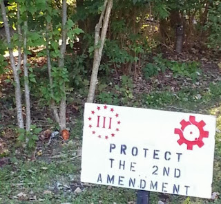

Monday, September 30, 2013
Firearms as "pollution." David Codrea: "Pushing control instead of freedom may explain some of paper’s losses."
Citing the post-Newtown “push for sensible gun laws,” Larkin elaborates what he means by “modest,” promising “Nothing to offend those who fall asleep at night reciting the Second Amendment. He’s the arbiter of that, you see. “Just a few simple things like tightened background checks and curbs on assault weapons,” Larkin elaborates, citing recent draconian infringements in “Maryland, New York and Colorado [as] reasonable restrictions on guns. Again, he’s the one who presumes to define what's reasonable.
This is the piece David expertly deconstructs. I was particularly struck by this quote:
“You have to look at the gun industry. Look upstream at the gun industry. That’s where our problem lies. “They’re the worst polluters in America.”
More on the collectivist death cult that is the religion of peace -- and the collectivist "journalists" who excuse it.
I'm sorry, but we have to talk about the barbarism of modern Islamist terrorism
What motivates this perversity? What are its origins? Unwilling, or perhaps unable, to face up to the newness of this unrestrained, aim-free, civilian-targeting violence, Western observers do all sorts of moral contortions in an effort to present such violence as run-of-the-mill or even possibly a justifiable response to Western militarism. Some say, “Well, America kills women and children too, in its drone attacks”, wilfully overlooking the fact such people are not the targets of America’s military interventions – and I say that as someone who has opposed every American venture overseas of the past 20 years. If you cannot see the difference between a drone strike that goes wrong and kills an entire family and a man who crashes his car into the middle of a group of children accepting sweets from a US soldier and them blows himself and them up – as happened in Iraq in 2005 – then there is something wrong with you. Other observers say that Islamists, particularly in Iraq and Afghanistan, but also the individuals who attacked London and New York, are fighting against Western imperialism in Muslim lands. But that doesn’t add up. How does blowing up Iraqi children represent a strike against American militarism? How is detonating a bomb on the London Underground a stab at the Foreign Office? It is ridiculous, and more than a little immoral, to try to dress up nihilistic assaults designed merely to kill as many ordinary people as possible as some kind of principled political violence.
Sunday, September 29, 2013
Still having trouble with email replies.
So, everyone who responded to the post on AR builds -- please be patient. I'll figure a way around it by tomorrow morning.
Praxis: Racking The Slide On A Handgun Made Easy
This useful link was sent to me by a faithful reader who comments:
Do you or a loved one have weak arms or hands? Here's a few quick tips on how to help almost anyone STILL rack the slide on a semi-automatic pistol using either the "push-pull" or "back-push" methods. Jump right to the 3:30 point on this 7:58 video.
Am having trouble with my email system.
My replies are apparently going through without any text or pictures. This has been particularly confusing for those who replied to my question about readers in the middle of an AR build. I am going to try another way out of this maddening AOL cluster coitus. Bear with me.
Saturday, September 28, 2013
Gomez ‘assault weapon’ ban editorial alienates gun owners
A former and expected future Massachusetts candidate for the United States Senate has enraged gun owners with an editorial published Tuesday in The Boston Globe. Gabriel Gomez, who ran in a special election to replace John Kerry, and who National Republican Committee Chairman Jerry Moran has said would run again in the regular election in 2014, blindsided his gun owner supporters by declaring “I was wrong to oppose assault weapons ban.”
See also: Former SEAL schools Gabriel Gomez on guns and freedom
Matt Bracken's comment on Facebook:
I graduated from BUD/S Class 105 in 1979 as an officer, and took a NavSpecWar platoon to Beirut in 1983. I mention it only as my bona fides to address you. I am extremely disappointed that a former SEAL officer has apparently sold out for perceived political gain. (And please, don't tell any former SEALs that your wife changed your mind about firearms and the Constitution!) As two men with similar training and experience with firearms, we both know very well that in the ultimate test, the difference between slaves or subjects and free men is the right to keep and bear arms that are similar to those carried by the King's men, the police, the military. Don't tell me that the 2nd Amd was written to protect duck hunters or target shooters! In fact, the American Revolution began at Concord and Lexington when the King's soldiers marched to confiscate the arms and gunpowder of American civilians. Mr. Gomez, spare us your "I defended the Constitution" blather. We see through your politically expedient conversion to the dark side. You are now standing firmly on the side of King George and every other dictator who has smashed freedom, or tried to smash freedom, by disarming their "unruly peasants" in the name of "public safety." (BTW, did you know that the bloody mass-murderers of the French Revolution, who also disarmed their peasants--before executing them--was actually called "The Committee of Public Safety?") I'm very ashamed of and disappointed in you, former SEAL or not, and I will do what I can to expose your selling out to the forces of rampant big-government statism. We don't want to live in a nation where the government holds a monopoly on meaningful firearms. We already know about many other countries that disarmed their populations before oppressing them. Just in the last century, Turkey, the USSR, Germany, China and a score of other nations disarmed their populations in the name of "public safety," and we know what happened next. We all saw the movie about a nation that was made nearly gun-free, except for the police and the military. It was called Schindler's List, and you will not get us on those trains, at any time in the future, unless and until you disarm us--the hard way. We will not be led like sheep into the slaughter pens because in a moment of foolish optimism we believed the sweet lies of socialist politicians. You want to take them? Molon Labe, sellout. Come and take them!
ATF wants its air force back.
Readers who remember the 90s will recall that the ATF got itself into a big scandal when they put together their own air arm consisting of Vietnam-era OV-10 Broncos. They were stripped unceremoniously of those when the word got around. Now they want to go high-tech: DOJ considers federal guidelines for law enforcement drones.
The report follows an OIG audit of domestic drone deployment in the US; the FBI, Burearu of Alcohol, Tobacco, Firearms, and Explosives (ATF), Drug Enforcement Administration (DEA), and US Marshals Service were all asked to provide details of their drone programs and feedback on potential guidelines. The FBI is said to be the only agency actively using drones "to support its mission," with the ATF expressing plans to utilize them for future operations.
The OIG report is here.
Are there any readers out there who are in the middle of an AR build?
Drop me an email if you are. GeorgeMason1776ATaolDOTcom.
ATF redefining "pistol"
NoloContendere over at ARFcom tells us that the ATF is redefining what a "pistol" is. He tells us that "This is a 2005 proposed rule. Never implemented. It's being revived......"
SUMMARY: The Department of Justice is proposing to amend the regulations relating to machine guns, destructive devices, and certain other firearms regulated under the National Firearms Act (NFA) for the Bureau of Alcohol, Tobacco, Firearms, and Explosives (ATF) to clarify the definition of the term ‘‘pistol’’ and to define more clearly exceptions to the ‘‘pistol’’ definition. The added language is necessary to clarify that certain weapons, including any weapon disguised to look like an item other than a firearm or any gun that fires more than one shot without manual reloading by a single function of the trigger, are not pistols and are classified as ‘‘any other weapon’’ under the NFA.
Omitted from the proposed regulation is the language: ‘‘any gun altered or converted to resemble a pistol.’’ This language mirrors the statutory provisions in 26 U.S.C. 5845(a)(2) and (4) that refer to weapons made from a shotgun or rifle. The NFA adequately reflects the Department’s consistent position that a rifle or shotgun, altered to function as a smaller, pistol-like weapon, maintains its classification as a rifle or shotgun and will not be classified as a pistol. Therefore, the addition of this language into the proposed regulation is unnecessary.
He continues: "(Nolo's note: for now. The ATF appears to say this won't make an AR pistol an NFA firearm, but we all know this will probably be an incremental step)." He also gives this link as a reference.
He adds: "Because it was noticed in 2005.... Comment period is over and is considered a 'final' rule... However. I cannot find where it has been implemented yet."
So what's coming? Is this the basis of some new "executive action" that makes more previously law-abiding folks into criminals? Time will tell.
Friday, September 27, 2013
Well, it's nice to know where we stand in their eyes. I guess this means it's okay to kill us.
Harkin: Tea Party 'every bit' as dangerous to nation as the Civil War.
“A small group of willful men and women who have a certain ideology about how our country should run and what we should do cannot get their way in a normal discourse and votes,” Harkin said. “Since they can’t get their way, they’re going to create this confusion and discourse and hope the public is so mixed up in who to blame for this that perhaps they’ll blame both sides.”“That is the path they see for taking over the government. It’s dangerous, very dangerous. ... Every bit as dangerous as the break up and the Civil War.”
The First Amendment according to Lindsey Graham, Dianne Feinstein & Dick Durbin. (John Peter Zenger they ain't.)
Is any blogger out there saying anything — do they deserve First Amendment protection? – Sen. Lindsey Graham (R-S.C.)
Feds move to limit who is a “covered journalist” deserving constitutional protection, And believe me, these guys ain't John Peter Zenger.
“What is a journalist today, in 2013? We know its someone who works for Fox or AP, but does it include a blogger? Does it include someone tweeting? Are these people journalists and entitled to constitutional protection?” Durbin not only labels freedom of the press as an entitlement, he goes on to suggest that the Bill of Rights is outdated, saying, “We need to ask 21st century questions about a provision in our constitution that was written over 200 years ago.”
Maybe we can get some GOP folks to invite bloggers who have broken real stories to the hearings on the House side. Nah, too "controversial."
Man Uses Spear to Save Girlfriend from Mountain Lion
As the reader who forwarded this link to me said, "Welcome....to 'Pleistocene Park.'"
Thursday, September 26, 2013
WaPo write up on the latest ATF scandal -- So where's your promised oversight hearing, Darrell Issa?
"The news that the agency somehow lost $127 million worth of cigarettes alone is unfathomable," said Rep. Darrell Issa, R-Calif., chairman of the House Oversight and Government Reform Committee. "Today's disappointing report reiterates what we already know — that ATF management continues to struggle with its day-to-day operations."Empty words without an ATF oversight hearing -- something that he promised the F&F whistleblowers years ago.
Buckeye Follies. Apparently Ohio State University is expecting the next football rioters to employ IEDs.
Ohio State University Now Has an Armored Fighting Vehicle
As the reader who forwarded this to me commented:
Of real interest is Paul Vance's statement: "The idea that the police are not entitled to an exception to the rule of law and have to abide by the same rules as everyone else is purely anarchistic." Think this guy has it backwards....
Indeed.
Two doctors' appointments yesterday, one more today and I apparently have to remind Eric Holder that there are STILL no more free Wacos..
I'll try to have more later. This is darned inconvenient, for there is apparently more trouble brewing with the ATF laying down the predicate for another attempted Waco. Will let you know the details when I get them, if I can. In the mean time, refer back to this epistle to the heathen from 2009.
LATER: Also see David Codrea's take here.
I have been invited to speak at this event in San Antonio on 19 October
Link.
I think I can work this will actually work in well with the planned October smuggling operations. Also, perhaps I will get a chance to apologize to Warrior Class in person then.
More "Justice for Trayvon"?
Greenville Wal-Mart Shooter Picked Victims By Race.
A man who shot four people near a Greenville Wal-Mart in June picked out his victims because they were white, according to several indictments handed down against him.Lakim Faust had more than 100 rounds of ammunition when he started shooting at people at a law firm and a shopping center in June, authorities said.
Weaselzippers asks: "Why do I get the feeling Al Sharpton and Jesse Jackson’s Bigot Brigade won’t be holding any protests over this?"
AR-15s In The News
Loved the last paragraph from Herschel Smith, even if I don't necessarily agree with it: AK-47s are also in the news and you can read about it if you wish (I have shot the AK-47 before and I think it’s an imprecise, rattling clanker), but around here we speak the name of Eugene Stoner with hushed, reverential awe and respect. If you say anything bad about Eugene Stoner or AR-15s you will be banned for life and imprecatory prayers will be spoken about you and your children’s children.
Cruz must be doing something right because everybody in the establishments of both parties hate him.
Ted Cruz: Political anarchist or genius?
Now, if he can just keep his dick in his pants (see, Gingrich, Newt) and his hands out of favor-seekers' pockets he might not end up being as blackmailed as John Boehner.
Another Obama constitutional criminal to get his black robes as payment for services rendered.
Legal Times reports that Harvard Law School professor David Barron, who previously served in a top-level position in the Justice Department’s Office of Legal Counsel, was nominated today to fill a vacancy on the U.S. Court of Appeals for the First Circuit.
Barron, formerly acting assistant attorney general in the Office of Legal Counsel under Attorney General Eric Holder Jr., returned to Harvard in 2010. Barron joined Harvard Law School in 1999 as an assistant professor. He became a professor in 2004. Earlier in his career, Barron served as an attorney-adviser in OLC, the division whose lawyers provide legal guidance to executive branch agencies. Virginia Seitz, a former Sidley Austin partner, is the assistant attorney general in charge of the office now.Barron and former OLC colleague Marty Lederman, who has since returned to Georgetown University Law Center, principally drafted a secret legal memo assessing the authority to target and kill a U.S. citizen abroad, The New York Times reported in October 2011. The Times said the OLC memo, written around June 2010, “laid out the administration’s justification” for targeting Anwar al-Awlaki. (The Justice Department has not publicly released the memo.)
As The Collapse Report asked last year: "Why Isn’t the Bar Association Dis-Barring David Barron and Martin Lederman For Telling Obama He Could Legally Murder?"
The pertinent question asked by a long-time reader who forwarded the above link to me is: "Given he was Acting Asst AG in the Office of Legal Counsel to Holder, did he have any connection with F&F?"
I will try to find out.
Smokin' it. F Troop strikes again. Once again I ask, "Where's the promised ATF oversight hearings, Congressman Issa?"
ATF's cigarette stings had 'serious lack of oversight,' audit finds.
The U.S. Bureau of Alcohol, Tobacco, Firearms and Explosives could not account for what happened to 2 million cartons of cigarettes, with a retail value of more than $127 million, according to the auditors.In one sting — which was done without approval of ATF supervisors — an informant working for the agents received nearly all of the sting's $5 million in profit, supposedly for expenses and commissions.But ATF agents could not provide paperwork to support the informant's expenses. Auditors did not disclose where that operation was conducted.Profits from that operation were deposited into the account of a different ATF sting in another state, which is a violation of the statutory requirements, the auditors found. The report does not indicate if ATF agents are under criminal investigation for that operation or the millions in missing cigarettes.
Here's the audit. Your tax dollars at work. Once again I ask, "Where's the promised ATF oversight hearings, Congressman Issa?"
LATER: See also "ATF as Incompetent (or Corrupt) with Tobacco as It Is with Firearms." I vote corrupt. Ascribing this serial criminality to the excuse of incompetence is giving them far too much credit and frankly is an insult to honest incompetents everywhere.
Wednesday, September 25, 2013
Timing is everything. I am taken to task by yet another long-time reader and supporter on the charge of censorship.
There are comments and then there are comments that require thought and response from me. Thought -- and the distillation of that thought into words -- takes time, at least it does for me. Consequently, if I don't have time to think and respond when I get the comment, I hold it, flag it for response and then come back to it. I usually then give it a more prominent position of its own, rather than see it buried where most won't return. Yesterday I posted this link to a Kurt Hofmann piece, "U of K journalism professor's anti-NRA hate mongering is just latest example."
Shortly thereafter I received this comment from long-time reader and supporter Sean:
Seems to me this article of David's wreaks of hypocrisy since I've repeatedly seen members here at Sipsey, on War on Guns and WRSA advocate the killing of traitorous elected officials AND their families when the SHTF. Killing innocents is killing innocents, isn't it? Sean.
Now, I flagged this comment for later response because it contains some points that are important to hit, as well as some misconceptions about this blog, at least, and the killing of innocents. It seemed to me that if Sean, a man who I respect and admire, could make these errors then others could too. The man, and the comment, deserved a thoughtful reply.
Yesterday was a rough day, and I didn't get around to the task, putting it off until today with the thought that it could wait. I was wrong. I then received this from Sean:
Censorship is so unbecoming of you Mike.....not posting my earlier comment that OUR SIDE has uttered the same crap about killing innocents doesn't make it untrue. After your blocking Warrior Class from responding to your public commentary....I guess I gave you far too much credit for actually practicing what you supposedly preach and being a man of principle. Turns out that like most of us fallible human beings, you are very much the flawed hypocrite that we all can be and hopefully strive to overcome. Get your shit together man. You are far too valuable to fall prey to things like being petty and censorship. Sean
Now, what Sean is referring to is a similar situation Sunday last when I responded to a comment by Warrior Class with its own stand-alone post as well: "Warrior Class takes me to task, upcoming plans and reflections on two decades."
In this post, I agreed with Warrior Class' criticism:
But like Warrior Class I am never satisfied with my work, so I offer no defense to his critique. His thoughts track with my own.
And after he received some unfairly rough criticism of his own from other readers, I commented:
Cut Warrior Class some slack. He's been a mainstay of support for a long time and if that doesn't give him the right to bitch I don't know what does.
Agreeing with a friend's critique, giving that opinion a more prominent venue, and then defending his right to have that opinion seems to me a strange form of censorship.
Yet, like Warrior Class, as a long-time supporter and reader, Sean has earned the right to criticize me. This is my reply to Sean's original comment:
Sean, you mistake Kurt Hofmann's post for David's but allowing for that it concerns me when you write, "Seems to me this article of David's wreaks of hypocrisy since I've repeatedly seen members here at Sipsey, on War on Guns and WRSA advocate the killing of traitorous elected officials AND their families when the SHTF." If there is one thing that I have been crystal clear on, I thought, was that the killing of innocents was strictly forbidden according to my understanding of the Three Percent rules of engagement. So when you conclude, "Killing innocents is killing innocents, isn't it?" you are certainly correct. I know that David Codrea and Kurt Hofmann both hold to this principle as well.
Of course I cannot answer for Pete at WRSA. Indeed, the issue of Kerodin and Company advocating the killing of innocents -- and Pete's endorsing of Kerodin with his own stamp of approval -- is one of the principal reasons for my criticism of Kerodin, Nye, et. al., and my split with Pete. I hate it, but I lost a good friend over this very issue. So I reject your claim that Sipsey Street, or the original codification of the principles of the Three Percent done by me, in any way countenances the killing of innocents. Hence, in my opinion at least, I cannot be guilty of "hypocrisy."
I asked Warrior Class to contact me by email or phone after the post so that we could sort things out and I could make my apologies for his apparent misconceptions or any unintentional slights I may have dealt him. He has not replied. I repeat that offer now, and make the same one to you. I value both of you, as freedom fighters and as friends. If I have unintentionally given offense to either of you, I humbly apologize. It is unfortunate, but it seems timing is everything, and my timing has been off lately.
He's a regular Joe -- just another one of the old comrades. Hoo, boy, is Wall Street gonna like this collectivist anal sphincter.
Doug Rink asks: Sandinista style government coming to NYC?
He's referring to this NYT story: "A Mayoral Hopeful Now, de Blasio Was Once a Young Leftist."
The scruffy young man who arrived in Nicaragua in 1988 stood out.He was tall and sometimes goofy, known for his ability to mimic a goose’s honk. He spoke in long, meandering paragraphs, musing on Franklin D. Roosevelt, Karl Marx and Bob Marley. He took painstaking notes on encounters with farmers, doctors and revolutionary fighters.Bill de Blasio, then 26, went to Nicaragua to help distribute food and medicine in the middle of a war between left and right. But he returned with something else entirely: a vision of the possibilities of an unfettered leftist government.
Of course this makes him just one of the collectivist gang that now rules Mordor-on-the-Potomac: "Obama Endorses de Blasio in New York Mayor’s Race."
See also: Joe Lhota on Bill de Blasio’s Strategy: ‘Directly Out of the Marxist Playbook’
You've got to give the guy credit. At least he's trying something the Dead Elephants refuse to.
Ted Cruz filibuster tops mark set by Rand Paul; Texas senator wants to stop Obamacare.
As dawn broke over Washington Wednesday morning, Sen. Ted Cruz still held the Senate floor, 16 hours into a filibuster designed to draw attention to the GOP’s effort to defund Obamacare — and topping the length of Sen. Rand Paul’s filibuster earlier this year.“As difficult as it is to cross one’s party leaders, I say — with perhaps a little familiarity to the consequences — that it’s survivable, and ultimately it’s liberating,” Mr. Cruz said in the early morning hours of his talk-a-thon, which he began at 2:41 p.m. Tuesday afternoon and showed little fatigue at 5:40 the next morning.Over night he read excerpts from both Ayn Rand’s “Atlas Shrugged” and from Dr. Seuss’ “Green Eggs and Ham” on the floor, cited approvingly the words of wisdom from actor Ashton Kutcher and hit TV show “Duck Dynasty,” carefully sipped water, and grabbed a quick snack at one point while fellow filibuster leader Sen. Mike Lee asked a 45-minute-long question, giving the Texas Republican a chance to stretch his legs, check messages on his iPhone and confer with his staff.
"Ever been bit by a dead bee?" The ATF "sting" that keeps on stinging -- themselves.
More F Troopery: "Loss of agent's testimony cited in ATF case dismissals."
Two more cases from the ATF's troubled gun-buying sting in Milwaukee have been dismissed, this time because the prosecutor says she can't use the operation's lead agent as a witness.Milwaukee County Assistant District Attorney Karen Loebel said in court Fridaythat she could not call U.S. Bureau of Alcohol, Tobacco, Firearms and Explosives Special Agent Jacqueline Sutton to testify — the latest setback for an operation riddled with problems exposed bya Journal Sentinel investigation.Loebel, who has dropped eight of the 18 cases she charged from the 2012 sting, said she was not allowed to disclose why Sutton could not take the stand because of "the manner in which I received the information."Top agency officials launched a probe into the actions of ATF agents in the sting, after the Journal Sentinel exposed numerous shortcomings of what was called "Operation Fearless."Among the Journal Sentinel findings: Agents hired a brain-damaged man to promote the store and set up drug and gun deals, then arrested him on federal counts; three government-owned guns, including a machine gun, were stolen; and the undercover storefront was ripped off of $40,000 in merchandise.The machine gun remains missing, Milwaukee police said Tuesday.
But here's the clue that this was really FUBARed:
Sutton, the agent in charge of the operation in Milwaukee, was transferred over the summer to ATF headquarters in Washington, D.C., according to sources with knowledge of the move.
She got transferred to where the anti-gun killer clowns of the Chief Counsels Office (like Little Jimmy Vann) can keep a close eye on her and coach any necessary perjuries from her if required.
The defense attorneys in the case immediately smelled the rat:
Loebel's latest dismissals means none of the cases to arise out of Operation Fearless — in either state or federal court — will go to trial.Attorney Russell Jones, who represented a man charged with selling cocaine to the agents before the counts were dismissed, said he suspects the government wanted to avoid a trial and the risk of more embarrassing details coming out."The DA played a game of chicken," Jones said. "I don't think they ever intended to take this case, or any of these cases, to trial."
So who got stung in the great Milwaukee sting? I am reminded of Walter Brennan in To Have and Have Not: "Ever been bit by a dead bee?" "Operation Fearless" is long dead, but it keeps stinging the ATF. The only question is, Darrell Issa, where are the ATF Oversight Hearings we were promised to come after Fast and Furious?
Tuesday, September 24, 2013
Pigs have flown and they're serving ice water in hell.
A CNN column with the startling title: "Gun control is not the answer."
Treason.
Not that John Kerry is unfamiliar with the concept. Secretary of State Kerry to sign Arms Trade Treaty - diplomats.
Another collectivist alternate reality universe heard from . . .
When I saw this headline I thought it was gag: "GOP launches race war to boost the 1 percent." It isn't a gag.
You can't kill an idea by stealing signs. Yup, just another gang. Threeper sign confiscated by cop from private property.

"Fed-Up NY Man Sets Up Hidden Camera to Find Out Who Was Repeatedly Stealing His Pro-Gun Sign – What He Discovered Blew Him Away."
Well, figuratively anyway. It was a cop, of course. Just another taxfeeder/gang member. So, what was it exactly that the cop was objecting to -- to the point of repeatedly committing theft of property while on duty? The "Protect the Second Amendment" sentiment? The AR-15 bolt face? The Three Percent logo? Hate to tell you, you tax-feeding tyrant, but you can't kill an idea by stealing signs.
More volunteers for the Julius Streicher Award.

Julius Streicher, Hitler's favorite newspaperman, after being hung at Nuremberg.
AP 'real reporters' spread disinformation to support gun ban agenda
A firearm prohibitionist's fondest wet-dream: Erasing the AR-15.
"A 20 ft. AR 15 drawn in pencil. Erasers are provided to erase the image."
This is what they would like to do with all the real weapons in citizen hands. Good luck with that.
Praxis: Cheap rifle practice in your own home.
This Winchester M14 .177 Caliber Co2 Dual Ammo Air Rifle is no substitute for real range time, but as a means of familiarizing kids with sights, breathing and trigger control, it has value.
Monday, September 23, 2013
U.S. Army Set to Ban Tattoos Below the Elbow or Knees
Current soldiers may be grandfathered in, but all soldiers will still be barred from having any tattoos that are racist, sexist, or extremist. Once the rules are implemented, soldiers will sit down with their unit leaders and "self identify" each tattoo. Soldiers will be required to pay for the removal of any tattoo that violates the policy, [Sgt. Maj. of the Army Raymond Chandler] said.
"Extremist"? Isn't that what they call Christians these days?
Update.
Since my mini-crisis early Saturday morning I have been asked about how I am doing so I thought I would give you this update. The symptoms of the congestive heart failure have almost disappeared thanks to the diuretics. Same goes with the pneumonia. The antibiotic co-pay was even cheap, Lord be praised. Continuing to work on various projects. Thanks again for all your prayers.
Mike
III
More on the latest Muslim inter-faith outreach in Kenya. 'Five of the Kenyan mall massacre gunmen are American'
Against kuffars make ready your strength to the utmost of your power, including steeds of war to strike terror into the (hearts of) the Enemy of Allah and your enemy, and others beside, whom you may not know, but whom Allah does know. Whatever you shall spend in the Cause of Allah, shall be repaid to you, and you shall not be treated unjustly. (Qur'an: 8:60)
Check out the photos of the miscellany of firearms in the hands of the security forces. Standardization doesn't seem to be their strong suit.
Interesting details of the Navy Yard shooting.
Received this email:
The following is from a 9-18-13 Facebook page of attorney Stephen G. DeNigris of Washington, D.C. Also see:http://www.cbs6albany.com/news/features/featured/stories/local-attorney-dc-officers-union-says-navy-yard-understaffed-1948.shtmlI'm continuing to write about the Washington Navy Yard here because I have represented those wonderful police officers for fifteen years and the fact that this page has developed a fairly large following.The call for the active shooter went out around 8:25 a.m. on Monday morning. As I noted in my earlier postings, only six police officers were on duty at the time with five of those officers in fixed posts. Chief of Police Mike McKinney was on road patrol and was the first to respond to the scene. He met the security officer (who was later killed) at the front door who told the chief that the shooter was on the 4th floor and warned him of the overlook into the atrium.Chief McKinney put out the call for mutual assistance and at that time Captain Bobby Eason arrived. Both immediately went to the 4th Floor - it was chaotic as people fled for their lives - they got to the 4th floor and the shooter (we will not mention his name) had moved into a stairwell - there are 6 stairwells in that bldg. The police radios were not working inside the bldg.. and possibly dead - (we have had a number of issues with the Navy on providing adequate radios to officers - which has also fallen on deaf ears) and communications was virtually non-existent. In the meantime, the officers could see injured or deceased victims and were hearing gun shots. They headed toward the gun shots down to the third floor - someone had pulled the fire alarm making it extremely difficult for the two officers to hear where the shots were precisely coming from.In the interim, the officers who were on fixed posts had closed up their posts and had to run almost half a mile from their posts to try and get to the NAVSEASYS building which is down on the Anacostia River. Why did they have to run??? Because the Navy had taken away their patrol cars as a cost savings measure. So now we have two officers in the NAVSEASYS Blgd - officers running a half mile because of no police cars after working all night, virtually no communications because of a poor radio system and the inability to switch over to the Metropolitan PD Radio frequency, as other police departments are able to do.The Washington Navy Yard Police Officers still entered the building without concern for their own safety to try and stop this fellow. The security guard told the officers where the Chief and Capt were.By then, the Chief and Capt were down on the third level and found two victims apparently dead. This guy was moving around. Seven minutes AFTER Chief McKinney sounded the request for mutual aid, MPD Officers started arriving. By then the chief and captain had been joined by two other security officers. Still shots were being fired and echoing through the building. Officers were teaming up with WNY Police Officers who knew the building layout.At some point, this guy apparently made it to the first floor where he confronted the security officer - executed him and took his sidearm. He then headed back up the stairwell and was confronted by an MPD officer where they exchanged gun fire and an MPD Officer was shot multiple times in the legs. The shooter fled.Washington Navy Yard Police Officers found the fallen officer and evacuated him to the rooftop for medevac - while other officers continued to hunt for this guy. This guy was now just shooting at anything that moved while people still fled the building. Finally he was confronted by a US Park Police Officer with am M-4, along with another police officer on the second floor who killed this guy with a shot to the head. And then it was over.I'm disappointed that the coverage has not spoken about the heroism of the Washington Navy Yard Police Officers - the lack of equipment and the lack of manpower along with the Navy's general indifference to civilian law enforcement. But we WILL get that message out.To chief McKinney, Captain Bobby Eason, FOP NDW Chairman Anthony Meely and all the WNY Officers who risked their lives, you are heroes in my eyes even if the Navy refuses to recognize your sacrifices.Stephen G. DeNigris, Esq.
Angela Giron's self-deluded swan song.
"Recalled Colorado Sen. Angela Giron: 'We can beat the gun lobby — we already have.'"
Riight. And Custer "won" a moral victory the battle of Little Big Horn, too.
Sunday, September 22, 2013
"U.K. columnist asks if world should intervene to stop U.S. ‘gun violence.’" Please do. Then we can get this settled once and for all. Just be sure to send enough body bags.
“[W]hat if we no longer thought of this as just a problem for America,” he asks, “and, instead, viewed it as an international humanitarian crisis -- a quasi civil war, if you like, that calls for outside intervention?”
My comment:
Please do, by all means. Blue helmets make such obvious aiming points. But, really, foreign intervention to impose citizen disarmament? I think that's a wonderful idea. I can think of nothing more calculated to unite Americans to overthrow all your collectivist toadies -- domestic and international. Then we can get this settled once and for all. Just be sure to send enough body bags. Be careful what you wish for. You may get it.Mike VanderboeghPinson, ALhttp://sipseystreetirregulars.blogspot.com
What's "Oh, shit!" in Farsi?
U.S. F-22 stealth fighter pilot taunted Iranian F-4 Phantom combat planes over the Persian Gulf.
“He [the Raptor pilot] flew under their aircraft [the F-4s] to check out their weapons load without them knowing that he was there, and then pulled up on their left wing and then called them and said ‘you really ought to go home’”
نجاست ، مدفوع ، پس مانده ، فضله ، زواءد.
Okay, so tell me again why the NRA didn't oppose B. Toad Jones when we were so close to victory?
New ATF chief considered giving up the fight during bruising confirmation process
Under withering attack during the nomination fight, Jones considered throwing in the towel.The ATF, of which he was acting director, was caught in political crossfire over gun control. And there were personal attacks on Jones, both in his role at ATF and as U.S. attorney for Minnesota. . .“And there were junctures where I was like, ‘OK, why am I doing this again?’ ”
Saturday, September 21, 2013
More inter-faith outreach from the religion of peace -- in a gun-free zone.
It is illegal in Kenya to own any type of firearm without a valid gun ownership license as spelled out under the Firearms Act (Cap. 114) Laws of Kenya. Anyone who is 12 years or older can apply to privately own a gun. However, such persons must provide in writing to the Chief Licensing Officer (CLO) stating genuine reason(s) for their need to privately own and carry a firearm. It remains at the discretion of the CLO to make a decision to award, deny or revoke a gun ownership license based on the reason(s) given. Anyone seeking to hold a gun license must pass the most stringent of background checks that probes into their past and present criminal, mental health and well as domestic violence records. Failure to pass one of these checks automatically bars one from being permitted to own a firearm. These checks are regularly repeated and must be continually passed for anyone to continue holding the gun license. Failure to pass any of these checks at any stage, means an automatic and immediate revocation of the issued license. Once licensed to own a gun, no permit is required in order to carry around a concealed firearm. -- Wikipedia.
'All Muslims leave... we only want to kill non-Muslims': Gunmen massacre at least 25 in Kenyan shopping mall after releasing anyone who could prove they were Islamic by reciting a prayer.
LATER: I just saw a CNN report on this and while they mentioned "terrorists" and "armed gunmen" (is there such a thing as an unarmed gunman?) they failed to make any reference to the motive or the fact that they were Muslims.
Logistics: An excellent yard sale score -- a Bianchi X-15 shoulder holster -- combined with excellent customer service.
For many years I carried a full-size 1911 in a Bianchi X-15 shoulder rig like the one above. All those memories came flooding back when I received this email from a faithful reader:
Mike:Recently I came across a Bianchi leather shoulder holster at a yard sale. The elastic band looked like it had been eaten by dogs or rats.I figured I could probably find an elastic band. Bought it for $2! Looked it up when I got back to the store, and it was still made and sold for well over $100.Well, I wrote to them and asked if they sold the elastic band.Bianchi is now owned by Safariland. They told me that they didn’t sell the band, but if I sent it back to them, they would fix it and it wouldn’t cost more than $15. They gave me an RMA to send it back.Well, I got it back from them. It cost me nothing and they paid for the shipping back to me!Good customer service. Good thing to remember for those trying to “kit up” on a budget. It’s very comfortable, and holds my 1911 well!
A less than nominal morning.
You will see from my earlier posts that I did them not long after midnight. Tried to get back to sleep by reading a book on how the Luftwaffe evaded the restrictions of the Versailles Treaty after World War I. Woke about 0300 unable to breathe. Symptoms of my old diagnosis of congestive heart failure. So, in we went to the ER and discovered that I had some of my CHF back along with a slight case of pneumonia. Perfect. Shot me full of diuretics and Leviquin and here I am, back at the keyboard. I'll finish a couple of posts I had planned and then I'm going to try to rest.
Another typical collectivist calling for the death of children of those who disagree with the party line.
"Remember the only difference between a socialist and a communist is that a socialist is a communist who has not yet found his AK-47 nor worked up the guts to use it, whereas a communist is a socialist who has found his Kalashnikov and is more than willing to use it on his political enemies." -- Mike Vanderboegh (just a little lesson I taught my kids when they were growing up.)
Democratic Official Allan Brauer Wishes Death on Ted Cruz Aide’s Children
Spitting on Their Graves: Democrats Leave Benghazi Hearing Before Testimony From Families of Victims
During the second portion of a House Oversight and Government Reform hearing about Benghazi Thursday on Capitol Hill, the majority of Democrats on the Committee left the room and refused to listen to the testimony of Patricia Smith and Charles Woods. Ms. Smith is the mother of Sean Smith, an information management officer killed in the 9/11 Benghazi attack. Charles Woods is the father of Navy SEAL Tyrone Woods, who was also killed.
Reminds me of the scene in Pork Chop Hill where the communist negotiator takes off his headphones and sits looking blankly into the distance while smoking his cigarette with that effeminate underhanded grip. Collectivists are the same, all over the world.
Friday, September 20, 2013
We will control the horizontal. We will control the vertical.
There is nothing wrong with your television set. Do not attempt to adjust the picture. We are controlling transmission. If we wish to make it louder, we will bring up the volume. If we wish to make it softer, we will tune it to a whisper. We will control the horizontal. We will control the vertical. We can roll the image, make it flutter. We can change the focus to a soft blur or sharpen it to crystal clarity. For the next hour, sit quietly and we will control all that you see and hear. We repeat: there is nothing wrong with your television set. You are about to participate in a great adventure. You are about to experience the awe and mystery which reaches from the inner mind to – The Outer Limits.
"The Headquarters, United States Special Operations Command (HQ USSOCOM) is seeking sources to provide a radio broadcast system capable of searching for and acquiring every AM and FM radio station in a specific area and then broadcasting a message(s) in the target area on all acquired AM and FM radio station frequencies."
And you wonder why so-called "journalists" are all collectivist hacks? They are indoctrinated by other bloody-minded collectivist hacks like this puke.
"A journalism professor at the University of Kansas (KU) turned to Twitter on Monday to suggest he would like to see the murder of children of National Rifle Association (NRA) members at the hands of a deranged gunman."
LATER: KU rebukes journalism professor for tweet sent after Navy Yard massacre.
"Rebuked?" "REBUKED?" Well, the SOB is unrepentant and will doubtless keep his job indoctrinating young so-called "journalists" in the collectivist dialectic.
In an email Thursday, Guth said the university had asked him not to do any more interviews and referred The Star to his personal blog. He wrote on the blog Monday that “I am angry, frustrated, sad and determined. The news of the senseless slaughter today at Washington’s Navy Yard has me again questioning how we can let this madness continue.“Frankly, I don’t care if I am criticized for being too quick to judge, too harsh in my criticism or too strident in my tone.”
Killing coal. "My gauleiter isn't as bad as the ones in Berlin."
Explain to me again why anyone in coal country should vote for any Democrat, "conservative" or not. It's like a German in the 30s making the excuse, "My gauleiter isn't as bad as the ones in Berlin." Same goes for so-called "anti-gun control" Dems. Hey, they belong to the same political party, you idiot. That doesn't strike you as suicidal cognitive dissonance? Not that the Dead Elephant party is any better.
Witness, for example, Ted Cruz' failing effort to find a spine among the denizens of the GOP's Boneless Chicken Ranch.

Thursday, September 19, 2013
No big surprise.
A faithful reader gives us the heads up on Newsbusters analysis of the media bias in the Navy Yard reportage, saying: "They have so many posts highlighting media bias about guns I'm going to aggregate them into a single email."
WashTimes Writer Miller Notes Media 'Obsessed' with Linking AR-15 to Navy Yard Murders.CNN's Piers Morgan Still Hasn't Retracted Claim DC Shooter Used an AR-15.CBS Asks If Gun Industry Puts Profits Above 'Human Lives'MSNBC's Hayes Highlights Viewer's Call for Making NRA 'Illegal' and Banning Guns.The Liberal Media's Top 10 Worst Anti-Gun Moments of the Year.Turns Out Ed Schultz is Conservative - On Guns.AP's Claimed 'Correction' of Error on Use of AR-15 in Navy Yard Murders Not Reflected in Key National Site Story.WashPost Locates 'Eminent Criminologist' to Assert Media Boredom With Navy Yard Massacre Comes from... White Racism?
Glad to know all these anti-firearm ex-ATF bureaucrats land on their feet.
Just last month, David Chipman was hauling water as an apologist for B. Toad Jones:
Surprisingly, the National Rifle Association did not take swings at Jones’ nomination. The nation’s largest gun lobby, which typically tries to block ATF nominees, remained neutral. That’s not the case with other groups. As Heitkamp was flying back to DC, Gun Owners of America’s executive director Larry Pratt tweeted out Heitkamp’s office phone number, telling his followers to call her and urge her to vote “no.” On Friday Pratt told MSNBC, “He’s no friend of the Second Amendment and hasn’t been helpful as acting director or going after what his bureau did during Fast and Furious,” he said. “Every time he looks cross-eyed, we’re going to be coming at him.”Mark Glaze, the director of Mayors Against Illegal Guns told MSNBC that for “15 years the NRA has starved the agency and they’ve done it pretty well.” Josh Horwitz, the executive director of the Coalition to Stop Gun Violence, added “there’s an intent [by gun lobby groups] to keep the ATF weak and ineffective, and to have them constantly be a scapegoat for what’s going on versus the terrible existing laws.”The ATF is underfunded and understaffed: The ATF has only about 2,500 agents. “It’s very small,” said David Chipman, a former ATF agent for 25 years who now is a consultant to Mayors Against Illegal Guns. (Emphasis supplied, MBV) Chipman said that number pales in comparison, to say, the DC police force, which has more than 3,000 officers.
Chipman even wrote this Politico guest opinion piece in support of B. Toad, who my sources characterize as "The Nuremberg Man" who would shoot his own mother if ordered to do so by a higher up -- any higher up.
Now we have news that the anti-gun bastard has landed a choice spot as "Senior Vice President, U.S. Public Safety Solutions" for SST, Inc.SST, Inc. manufactures ShotSpotter gunfire location systems. From their announcement:
Chipman will expand SST's leadership in partnering with cities nationwide to fight gun violence and related crime through the use of its ShotSpotter gunfire data and intelligence. As an experienced law enforcement veteran, Chipman served in numerous executive and field agent roles at the Bureau of Alcohol, Tobacco, Firearms & Explosives (ATF) for more than 25 years. While at the ATF, he developed, implemented and evaluated firearms violence reduction strategies aimed at making America's neighborhoods safer. He most recently served as a senior advisor to Mayors Against Illegal Guns, a national, bipartisan coalition of mayors working to shield America's communities from gun violence, and he also served as an ATF Fellow for the International Association of Chiefs of Police.
The IACP, of course, is another band of anti-firearm zealots that can be counted upon to provide ludicrously over-ranked, pot-bellied five-stared uniformed bureaucrats as a backdrop to whatever photo op the citizen disarmament lobby desires.
You know what's scary is that I find myself more and more agreeing with the ACLU.
A tip of the boonie hat to Jesse Trentadue, who forwarded this link to me: FBI a ‘secret domestic intelligence agency,’ ACLU says.
Another way of saying it is "secret political police in service to the regime." You're damn straight they are.
Here's the ACLU report.
NRA mantra of "Enforce Existing Gun Laws" comes back to bite them in the ass.
That paragon of Second Amendment rectitude Charlie Rangel writes: "That is why I am fighting to pass the Enforce Existing Gun Laws Act. My bill does nothing to the millions of law-abiding American gun owners already enjoying their Second Amendment rights. What it does is remove the intolerable restrictions on the ATF."
Oh, great. Absolutely. That's all we need is to further empower an agency still unrepentant for a whole host of constitutional sins, of which Fast & Furious is but the latest. And he's using the NRA's own words against them -- and us. Pretty slick, Charlie. Pretty slick.
LATER: David Codrea comments here that "Charlie's on board with you, Wayne. Now what? I still haven't had anyone who parrots that stupid line explain to me how it's any different from saying 'Enforce existing Intolerable Acts.'"
Wednesday, September 18, 2013


Tuesday, September 17, 2013
Getting into the militarization rush. Men in Black (Helicopters) celebrate the "cloak of mysteriousness."
"Police militarization and an argument in favor of black helicopters."
article quotes:
"After this (SWAT) operation, I was fascinated by the social media discussion that blossomed among ill-informed knuckleheads who were certain that the government was taking over."(snip)"What is it with this growing concept that SWAT teams shouldn’t exist? Why shouldn’t officers utilize the same technologies, weapon systems, and tactics that our military comrades do? We should, and we will."(snip)"Black helicopters and mysterious warriors exist. They are America’s answer to the evil men that the anti-SWAT crowd wouldn’t dare face. We will make mistakes but we are duty-bound to do what we can to minimize the chances of mistakes occurring."(snip)"I do believe to some degree that we SWAT operators should swathe ourselves in a cloak of mysteriousness...."
David "Axis of Evil" Frum once again demonstrates that he has failed to internalize the lessons of the Holocaust.
While J.D. Tuccille rightly observes in a Reason post that "Washington Navy Yard Already Suffers the Restrictions That Gun Control Advocates Favor," over at The Daily Mark of the Beast David "Axis of Evil" Frum opines "Let’s Not Wait to Talk About Gun Control," thereby demonstrating once again that he has failed to internalize the lessons of the Holocaust.
No AR-15, just a Joe Biden twelve gauge. A bad day for the citizen disarmament meme. Black Buddhist with anger management issues, a top secret clearance and an addiction to video games passes background check.
Okay, let's see if I've got this right. A black navy vet, government contractor and likely Obama voter who felt he was the victim of racism and also happened to be a Buddhist with a bad temper (now there's a laughable oxymoron right there) with a 'secret' clearance, and a Global War on Terrorism Service Medal, armed with a Remington 870 twelve gauge ("As endorsed by Joe Biden!") legally purchased from a suburban Virginia gun shop, somehow gets past the tight security on a naval base and starts shooting, re-arming himself as he goes along with weapons gleaned from the dead armed guards he murdered. The AR-15 that was reportedly used by this puke who was addicted to violent video games and had mental issues including voices in his head is reported this morning by various media outlets as either a. taken from a dead guard or, b. never having existed at all.
Oooh. No evil black rifle. Not neat. Not neat at all. An argument for "Univeresal Background Checks"? Nope. Wasn't this a CSGV-approved victim disarmament zone where the "only ones" had weapons and there was a "government monopoly of violence"? Yup. All in all, it was a bad day for the practitioners of the citizen disarmament meme.
That doesn't mean the usual blood-dancing suspects weren't out in in force, with Politico reporting "After shooting, talk turns to gun control" and "Dianne Feinstein: Congress ‘shirking’ duty on guns."
The facts don't fit the collectivist propaganda meme, but the liars go pontificating on.
Monday, September 16, 2013
Praxis: Homemade Danish Submachineguns. "When guns are outlawed, plumbers will build them in the basement."


Reports of O's political death have been greatly exaggerated.
Syria in the Age of Myth
Don’t believe that Obama is “ruined” and his administration is “shattered.” Three and a half years is a long stretch for a president, especially given the capabilities of the Obama team and an obsequious media. Every time Obama experiences another self-inflicted mess — from the Obamacare shake-down congressional spectacle to the 2010 midterm rebuke to the serial scandals — he manages to rebound. Already he is claiming his ineptitude was by design and that only his craft brought Putin to the table and averted a crisis; millions still believe such preposterous fantasies.He is also a genius at diverting attention through another domestic war or foreign crisis (would that our enemies abroad hear the same slurs from Obama that he reserves for his conservative opponents at home: imagine Putin as a “fat cat,” or a warning to Assad that we “punish our enemies.”)Benghazi, the AP, the NSA and the IRS debacles are put on the back burner by Obama’s Syria follies. They in turn will be forgotten once we brace for a new war to follow the ones waged against the evil redneck assault gun owners; the minority bashers who committed Trayvon Martin-like travesties daily; the sinister homophobes who denied marriage equity; the nativists who hated people of color and so insisted on onerous legal technicalities against undocumented workers; the voter suppressionists who demand ID at the polls; the misogynists who denied powerful professional women a little help to ensure their reproductive rights; the polluters who fouled our air and water and fried our planet; the cruel older generation that ignored embattled students struggling with oppressive loans; and union busters who hated collective bargaining.All those wars will revive and be bolstered by even more in the next 40 months to come. “You did not build that” and “no time for profit” have demagogic children not yet born. We will hear thousands more of the tired emphatics like “make no mistake about it” and “let me be perfectly clear.” There will be hundreds more straw men: “Some do these bad things; others do those bad things, but I alone do the good things.” We have in store lots more of the teleprompted first-person I, me, my, and mine narcissism. “Bush did it” has three more years of ad nauseam utility. “Iraq” will still begin and almost end every sentence until 2017. “Working for the middle class” will follow each dismal jobs report.Do not underestimate the rhetorical skills and political demagoguery of Barack Obama. He is as incompetent and delusional as Jimmy Carter, but he has far better sophistic skills, far better advisers, and is far more ruthless. Almost half of America does not pay federal income taxes; almost half receive some sort of government assistance. They are as loyal as the captive media to what Obama represents and delivers.Putin will not let the Syria debacle fade entirely—aided by John Kerry’s sanctimonious efforts to be remembered as Nelson Mandela with Tomahawks, and to freelance while Barack Obama is incommunicado on the golf links.Yet even this ongoing Syrian tragedy will not yet end Obama’s influence and power, which has been damaged but has not been lost. Brace for more.
A "Teachable Moment" for collectivists who aren't interested in learning.
Two members of the Colorado state Senate learned a lesson the hard way last week, and it provided a teaching moment in U.S. politics. The overriding lesson was that, if politicians take away their citizens’ right to debate and present opinions on legislation, those same politicians shouldn’t be surprised when their jobs are taken away by those same citizens, via the ballot box.
Those on the left and the overwhelming majority of the national media were all in on their ideas of what might reduce gun violence and mass shootings — minus any evidence on their side. And the results in Colorado prove it. The national media covered as a foregone conclusion that the gun control lobby had the only sane and reasonable policy. In fact, as reported by the blog Legal Insurrection, when the left-leaning Public Policy Polling firm took a survey a few days out from the recall vote that showed Sen. Giron losing by a dozen points, it opted against making that survey public, figuring it surely couldn’t be correct. She lost by a dozen points.If money were all that mattered, perhaps PPP would have been vindicated, as the gun control lobby — led by $350,000 from New York Mayor Michael Bloomberg’s Mayors Against Illegal Guns group — outspent those seeking the recall by a whopping 6-1 margin, pushing at least $3 million into the effort.Now all they have to show for it is two losses, with the media desperately trying to make it into a nonstory, other than to parrot Democratic talking points of purported voter suppression. Of course. If the left wins, it’s because they truly represent a just cause. When they lose, there must be some sort of shenanigans. If the circumstances of this effort were reversed, with a successful recall of two Republicans who opposed gun control, it would have been the lead national story last week, even overriding the strife in Syria. That’s how vested the national press is in this matter.
More collectivist hand-wringing on Colorado.
E.J. Dionne blames the recall results on the "gun manufacturers lobby" and "gun extremists." Hoo, boy. He ain't even seen "gun extremism" yet.
More on the militarization of the federal bureaucracy.
Armed EPA raid in Alaska sheds light on 70 fed agencies with armed divisions.
The LIBRARY OF CONGRESS SWAT team? Really? Sheesh.
Sunday, September 15, 2013
"The Death of Gun Control: Why the recall of two Colorado legislators is a major setback for gun-safety advocates nationally."
"Matt Bennett, a veteran gun-policy strategist and researcher now with the center-left think tank Third Way, pointed me to a poll that showed that even recall supporters still favored gun background checks; it was Colorado's ban on high-capacity magazines they revolted against."
One more reason to continue fighting magazine bans with smuggling and civil disobedience.
Warrior Class takes me to task, upcoming plans and reflections on two decades.
He comments:
Do you ever write any more of your own, or are you just now a Drudge-type conglomerate? We can all get the news directly from the sources you provide, but it was what you had to say that we all respected. Now you have nothing to say, so why should we keep coming here? Hell, you don't even say thank you. Adios, hombre. WarriorClass III
Funny. I was thinking the same things more or less just the other day. Not the part about failing to say thank you, because I try to do that, at least, without fail. I couldn't do what I do -- to the extent I am able to do it -- without the constant support of my readers. And I mean "support" not just in the voluntary subscriptions but in all the prayers and kind words I get daily in comments and emails.
But like Warrior Class I am never satisfied with my work, so I offer no defense to his critique. His thoughts track with my own. If I may, however, I'd like to offer a more complete look behind the scenes as it were to my average day that may be an explanation, if an unsatisfactory one.
As anyone who looks at the times of my various posts can tell, I've difficulty with insomnia. Sometimes the various aches and pains will wake me up, sometimes an idea. My first move after hitting the head is to the computer to check my email, answering those that require answer, marking many for later consideration, deleting those that have made it past the spam filter, etc. I get hundreds of email (sometimes more than a thousand) each day, so this is a constant chore. I then go to Sipsey Street and release (or delete) comments on previous posts. I then begin constructing the posts for the day from the news that seems important to me, especially from news tips of readers garnered in the previously-discussed emails.
Sometimes I'll start this process right after midnight and it takes me only so far when I must get some sleep again, and then I lay back down. Sometimes it works and I get more rest, sometimes not. If I do, often I'll oversleep, so that when I wake, I'll have just enough time to get outside a hard-boiled egg, shower, have Rosey change the dressing on my back and get ready to drive her to work. She has to be there by 0800 and it takes about a half hour to drive there. After dropping Rosey, I head to the doctors' appointments for the day or bill-paying stops and try to combine the trip back home with other stops that get the maximum amount accomplished for the least expenditure of gas. Along the way, I always hit the PO Box to see what comes in since many folks only communicate with me by essentially anonymous snail mail. (The One Hundred Heads note was a good example of that.)
I am generally back home sometime around lunch. My first move is to the computer, again to release comments and check (and weed out) emails. Lunch has to be light because my digestive system is very pressure-sensitive and the results of over-eating are often spectacularly inconvenient, so if I'm going to get anything done later in the afternoon I've got to eat sparingly.
If I've had little or no sleep the previous night and have no other intervening work required of me before picking up Rosey, I'll fall asleep on the couch after eating. Lately though, I've had plenty to keep me busy. This is the time when I get the most done on the Absolved rewrite, usually about three or four times a week. This is also when I do more planning and organizing work for upcoming operations. More often, this is when I get required household chores done.
Then, too soon, the time is up and I'm off to pick up Rosey who gets off at 1700 Monday through Friday and at 1600 on Friday. Any grocery shopping generally happens on the way home, which can delay things by about an hour or two given rush hour traffic. My first move once inside the door is down the stairs to the computer, where I go through the email/post ritual once again. (I'll do this once more before turning in for the episodic night.) Then, having posted on Sipsey Street the stuff that I think is important enough to interest the readers, I go up for supper and a little time with Rosey. And so, to bed, and then the schedule repeats.
In the past few weeks I've also been absorbed by going through my papers accumulated over the past 20 years, sorting them out and boxing them up for the Birmingham Public Library Archives folks. Believe me, this is a huge volume of documents. Yet this, like Absolved, is a task that must be completed before I resume civil disobedience operations in the fall, if for no other reason than we are contemplating some stuff that could get me arrested at the least.
When I do go out to Colorado, I will have a reporter in tow who will document the whole trip. Same goes for the planned trip up to Massachusetts, New York and Connecticut (their ammo restrictions go into effect in October, not July as I was misinformed back in April and I still have that 7.62x39 to spread around in defiance of that intolerable act).
One of the things we're talking about for Colorado is how to maximize the effect of our efforts on the future career of Governor Hickenlooper and how to keep hanging the gun-control bell around that cat's neck until the November 2014 election.
Despite all of these daily and special tasks, I, like Warrior Class, am dissatisfied that I haven't been able to crank out more original material and follow up on investigative stories that I have received tips on. I don't blame him for being upset. I'm upset myself. Yet, the blog must go on if anything else is, and the blog is a monster that must be fed. There are many folks who make Sipsey Street their first stop of the day and who appreciate the Drudge-like links, often because they wouldn't encounter them elsewhere and they appreciate my take on them, even if it's just a sarcastic headline.
It is not an excuse, I offer you dear readers, but perhaps it is an explanation.
You know, going through my papers has also provided me with a glimpse at what a long fight we are in, how far we've come, how far we have to go, and of the many friends and fellow fighters we've lost along the way. It's been 9 years since I lost my good friend Arlin Adams to heart attack. It was Arlin, a devout traditional Episcopalian, and the "1st Psy-Ops Company, Southeastern Command" who helped me get the "Unwanted by the FBI" posters up in Michael Brescia's haunts in Philadelphia which embarrassed the FBI into finally rolling up the last remnants of the Aryan Republican Army cells in that area. (Brescia had been the roommate of federal provocateur Andreas Carl Strassmeier at Elohim City, OK at the time of the OKC bombing. See Ambrose Evans-Pritchard's article in this issue of the John Doe Times.)
It's been five and a half years since we lost my co-conspirator in truth on the OKC bombing J.D. Cash. To my eternal regret, J.D. was buried before anyone thought to let me know.
Ten years before that. we lost Glenn Wilburn, whose crusade to find out what really caused the deaths of his two grandsons Chase and Colton Smith in the Murrah Building daycare on 19 April 1995 brought J.D. and me together in the private investigation of the Oklahoma City bombing.
Glenn, J.D. and I made a solemn promise that one day we would get to the truth of the OKC bombing and the role that Elohim City played in it and that we would stroll together onto the foreclosed property where the bolmbing had been planned and together piss on the graves of FBI informant "Pastor" Millar and the stupid terrorist Richard Wayne Snell (he shot and killed a pawn shop owner he mistakenly believed was Jewish). It was Snell, whose execution date was moved up by Arkansas Governor Jim Guy Tucker to 19 April 1995, in whose honor the OKC bombing was carried out the morning of his death to give him a "going away present." As he awaited his execution, Snell watched television coverage of the bombing and laughed like hell at the carnage. His last words were: "Hell has victories. I am at peace."
Well, both Millar and Snell have likely gone to that Hell. J.D. and Glenn have gone to their respective rewards, but it is unlikely we ever know the truth about the OKC bombing or that I will get the chance to urinate upon the graves of Millar and Snell. It is far more likely that one their neo-Nazi familiars or FBI handlers will urinate upon mine. I am content though, proud to have known such fearless patriots as J.D. and Glenn, prouder still that they called me friend.
There more faces that pop up when I go through these documents. There is Doyle Proctor, another fearless patriot who stood by me along with the rest of Bob Wright's boys of the 1st New Mexico at the national militia meeting at Mountain Springs, Texas back in October 1995 when I took on Prophet of the Most High Yahweh Willie Ray Lampley. Doyle also played a critical role in the beginning of Operation White Rose. Doyle is gone now too, an ardent patriot gone to his reward.
Bob Wright, my fast friend since that day in Texas is still here, of course. There have been many times when Bob and I wondered aloud how we ever made it alive through the 90s. It is evident that God is not done with us yet.
So to Warrior Class and everyone else who justifiably gets a little irritated at the quality of my work product, I would ask forbearance if not forgiveness. As far as I've traveled to date, I ain't done yet.
Subscribe to:
Posts (Atom)